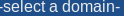
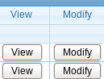
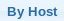
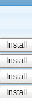
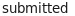
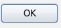
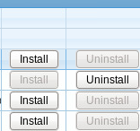

from sikuli import * def doLogin(): click() type("\tciwi\tasd123\n") def doSelectDomain(): wait(, 8) click() click() type("\t\r") def doMainMenuComponents(): wait(, 8) click() def gotoAdsComponentStatusByHost(): wait(, 8) click(Pattern().targetOffset(34,41)) wait(, 8) click() def startInstall(): wait(Pattern().similar(0.85).targetOffset(0,17), 8) click(Pattern().similar(0.85).targetOffset(0,17)) def enterRemoteLoginCredentials(): wait(, 8) click() # Use keyboard to enter username, password, and to clear the default # text for the "Install as User" field using the \b type("\t\tautotest\tautotest\t\b\t\t\n") def enterInstallPath(path): wait(, 8) click() type("\t\t" + path + "\t\t\t\n") def enterSiteSpecificQuestions(): wait(, 8) click() type("\t\t\t\n") def enterPhysicalHosts(): wait(, 8) click() def submitTransaction(): wait(,8) # Tab to Install or Unstall button type("\t\n") if (exists(, 8)): click() else: click() print "Ciwi.submitTransaction Error: Transaction failed\n" exit (1) def startUninstall(): click(Pattern().targetOffset(44,15)) def doLogout(): click()